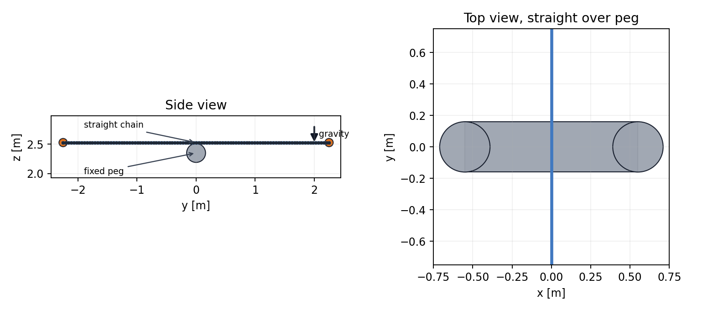
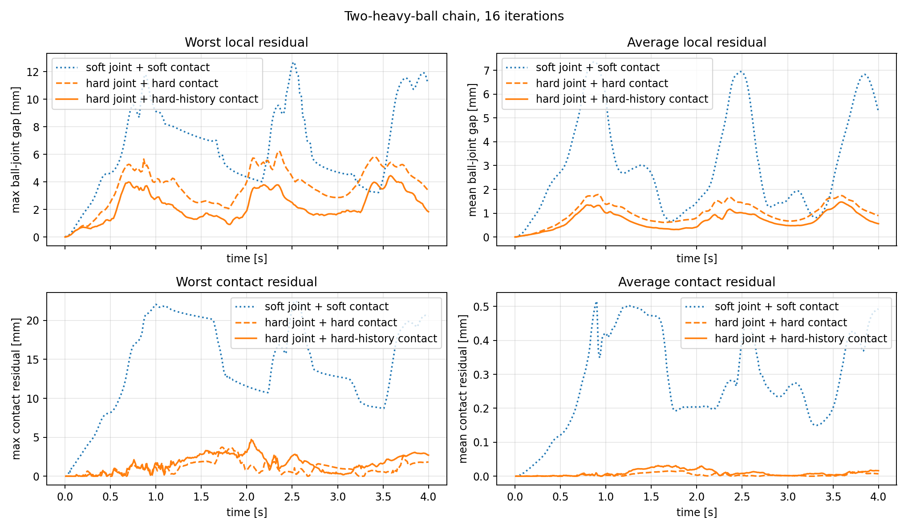
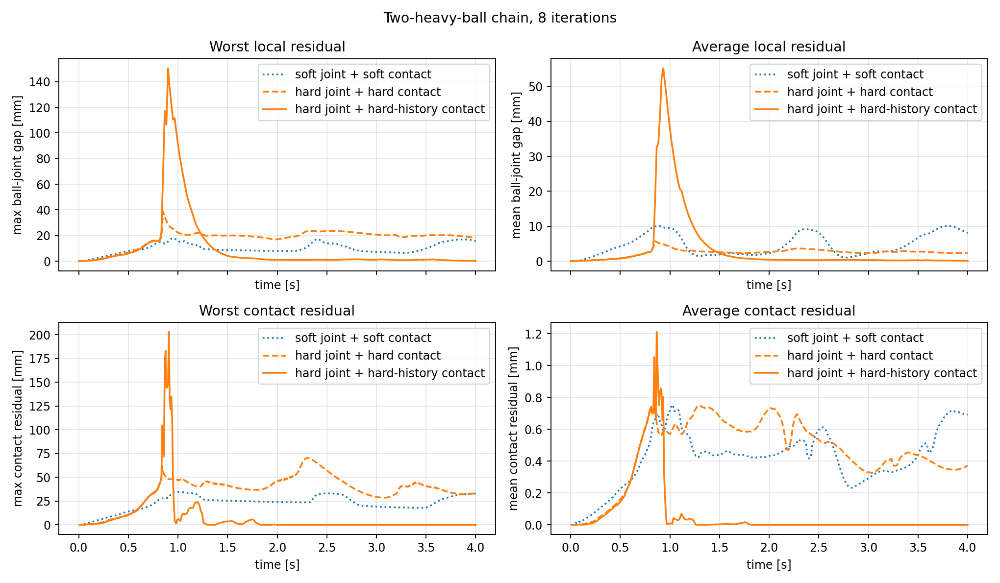
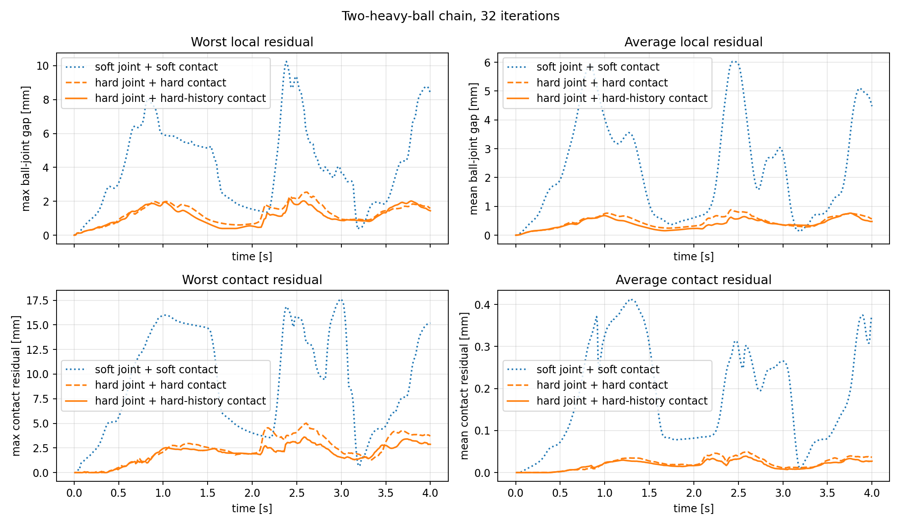
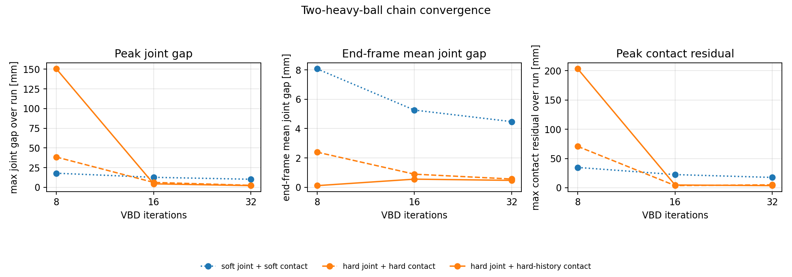

Setup
The chain starts straight and tangent above the fixed peg. A small initial velocity separates the load paths, then gravity and contact produce the wrap.
The report compares soft-soft, hard-hard, and
hard-hard-history. The primary metrics are ball-joint anchor
gap and post-solve normal contact residual.

Comparison Video
The video runs the validation scene at 16 VBD iterations and
compares the three retained mode combinations side by side.
Result At 16 Iterations
Peak joint gap:
12.7 mm
Final mean joint gap:
5.26 mm
Peak joint gap:
6.23 mm
Final mean joint gap:
0.897 mm
Peak joint gap:
4.45 mm
Final mean joint gap:
0.557 mm
Lower is better for both values. The hard-history row gives the lowest joint drift in this reference run; contact residual is shown in the residual trace below rather than mixed into the summary cards.
Reference Residual Trace

Iteration Sweep

8 iterations.
32 iterations.